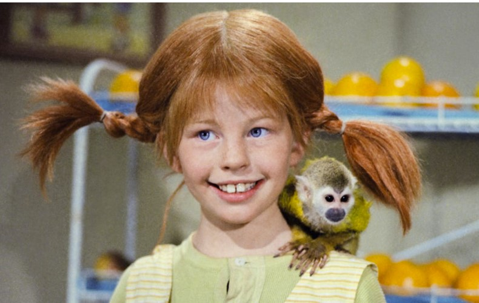
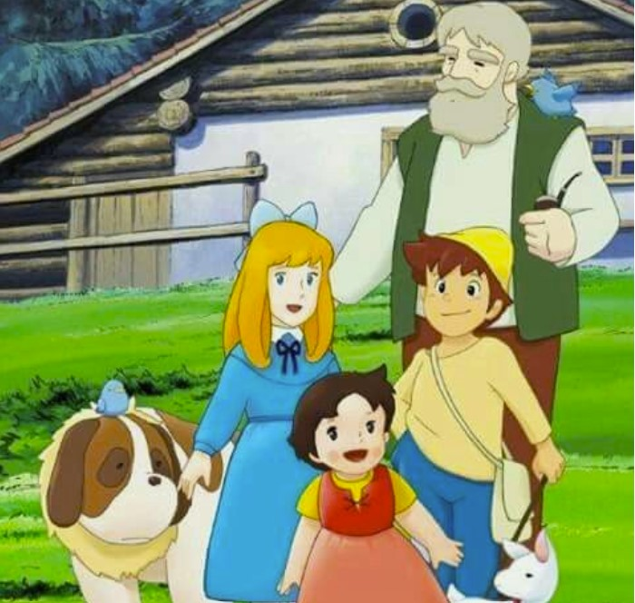
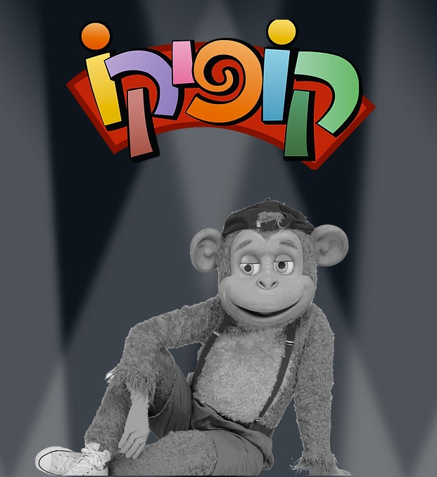

| Movie's name |
Poster |
Short description |
| Bilby |
 |
Bilby is a nine-year-old girl with messy red hair and freckles on her face.
She wears a quilted dress and big shoes.
Bilby lives in a small Swedish village in Villa Vilkola.
Her best friends are a squirrel monkey named Mr. Nilsson and a horse that lives on the porch.
She has no adult relatives, her mother died in childhood and her father is a captain on a ship, a native king.
Bilby is very rich with a gold chest and a chest of drawers with special objects. |
| The sounds of music |
 |
A young aspiring nun is sent to be the governess for a widowed naval captain's seven children, leading to a life of music, love, and challenges against the backdrop of Nazi-occupied Austria. |
| Heidi |
 |
A young orphaned girl, Heidi, is sent to live with her grumpy grandfather in the Swiss Alps, where she brings joy and adventure into the lives of those around her. |
| Kofiko |
 |
The monkey Kofiko gave as a birthday present to Naga, the youngest girl in the Lazar family.
Kofiko is a special breed monkey in the Ein Ganim neighborhood in Petah Tikva.
David, Tamar's brother, brought Kofiko from the island of "Khontoza" which is not on the map.
Kofiko surprises with his special friendship with Orna, Yoram and Nega, the three brothers he came to.
In each episode, Kofiko tries to help the Lazar family and his acquaintances, but always fails and complicates matters even more.
The neighbors of the Lazar family, Shoshana and Avrom Omofi, hate Kofiko and are trying to get rid of him. |
| Emil and the detectives |
 |
Young Emil is robbed on his way to Berlin, but he doesn't give up. With the help of a group of child detectives, he sets out to catch the thief in a thrilling chase. |